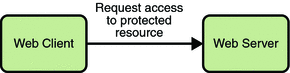
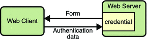
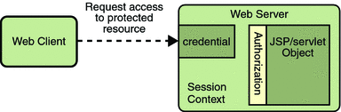
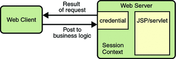
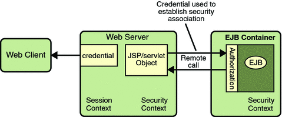

Overview of Java EE Security
Java EE, web, and web services applications are made up of components that can be deployed into different containers. These components are used to build a multitier enterprise application. Security for components is provided by their containers. A container provides two kinds of security: declarative and programmatic security.
Declarative security expresses an application component’s security requirements using deployment descriptors. Deployment descriptors are external to an application, and include information that specifies how security roles and access requirements are mapped into environment-specific security roles, users, and policies. For more information about deployment descriptors, read Using Deployment Descriptors for Declarative Security.
Annotations (also called metadata) are used to specify information about security within a class file. When the application is deployed, this information can either be used by or overridden by the application deployment descriptor. Annotations save your from having to write declarative information inside XML descriptors. Instead, you just put annotations on the code and the required information gets generated. For more information about annotations, read Using Annotations.
Programmatic security is embedded in an application and is used to make security decisions. Programmatic security is useful when declarative security alone is not sufficient to express the security model of an application. For more information about programmatic security, read Using Programmatic Security.
A Simple Security Example
The security behavior of a Java EE environment may be better understood by examining what happens in a simple application with a web client, a JSP user interface, and enterprise bean business logic.
In the following example, which is taken from JSR-244, the Java EE 5 Specification , the web client relies on the web server to act as its authentication proxy by collecting user authentication data from the client and using it to establish an authenticated session.
Step 1: Initial Request
In the first step of this example, the web client requests the main application URL. This action is shown in Figure 28-1.
Figure 28-1 Initial Request
Since the client has not yet authenticated itself to the application environment, the server responsible for delivering the web portion of the application (hereafter referred to as web server) detects this and invokes the appropriate authentication mechanism for this resource. For more information on these mechanisms, read Security Implementation Mechanisms.
Step 2: Initial Authentication
The web server returns a form that the web client uses to collect authentication data (for example, user name and password) from the user. The web client forwards the authentication data to the web server, where it is validated by the web server, as shown in Figure 28-2.
Figure 28-2 Initial Authentication
The validation mechanism may be local to a server, or it may leverage the underlying security services. On the basis of the validation, the web server sets a credential for the user.
Step 3: URL Authorization
The credential is used for future determinations of whether the user is authorized to access restricted resources it may request. The web server consults the security policy (derived from the deployment descriptor) associated with the web resource to determine the security roles that are permitted access to the resource. The web container then tests the user’s credential against each role to determine if it can map the user to the role. Figure 28-3 shows this process.
Figure 28-3 URL Authorization
The web server’s evaluation stops with an “is authorized” outcome when the web server is able to map the user to a role. A “not authorized” outcome is reached if the web server is unable to map the user to any of the permitted roles.
Step 4: Fulfilling the Original Request
If the user is authorized, the web server returns the result of the original URL request, as shown in Figure 28-4.
Figure 28-4 Fulfilling the Original Request
In our example, the response URL of a JSP page is returned, enabling the user to post form data that needs to be handled by the business logic component of the application. Read Chapter 30, Securing Web Applications for more information on protecting web applications.
Step 5: Invoking Enterprise Bean Business Methods
The JSP page performs the remote method call to the enterprise bean, using the user’s credential to establish a secure association between the JSP page and the enterprise bean (as shown in Figure 28-5). The association is implemented as two related security contexts, one in the web server and one in the EJB container.
Figure 28-5 Invoking an Enterprise Bean Business Method
The EJB container is responsible for enforcing access control on the enterprise bean method. It consults the security policy (derived from the deployment descriptor) associated with the enterprise bean to determine the security roles that are permitted access to the method. For each role, the EJB container uses the security context associated with the call to determine if it can map the caller to the role.
The container’s evaluation stops with an “is authorized” outcome when the container is able to map the caller’s credential to a role. A “not authorized” outcome is reached if the container is unable to map the caller to any of the permitted roles. A “not authorized” result causes an exception to be thrown by the container, and propagated back to the calling JSP page.
If the call is authorized, the container dispatches control to the enterprise bean method. The result of the bean’s execution of the call is returned to the JSP, and ultimately to the user by the web server and the web client.
Read Chapter 29, Securing Java EE Applications for more information on protecting web applications.
Security Functions
A properly implemented security mechanism will provide the following functionality:
Prevent unauthorized access to application functions and business or personal data
Hold system users accountable for operations they perform (non-repudiation)
Protect a system from service interruptions and other breaches that affect quality of service
Ideally, properly implemented security mechanisms will also provide the following functionality:
Easy to administer
Transparent to system users
Interoperable across application and enterprise boundaries
Characteristics of Application Security
Java EE applications consist of components that can contain both protected and unprotected resources. Often, you need to protect resources to ensure that only authorized users have access. Authorization provides controlled access to protected resources. Authorization is based on identification and authentication. Identification is a process that enables recognition of an entity by a system, and authentication is a process that verifies the identity of a user, device, or other entity in a computer system, usually as a prerequisite to allowing access to resources in a system.
Authorization and authentication are not required for an entity to access unprotected resources. Accessing a resource without authentication is referred to as unauthenticated or anonymous access.
These and several other well-defined characteristics of application security that, when properly addressed, help to minimize the security threats faced by an enterprise, include the following:
Authentication: The means by which communicating entities (for example, client and server) prove to one another that they are acting on behalf of specific identities that are authorized for access. This ensures that users are who they say they are.
Authorization, or Access Control: The means by which interactions with resources are limited to collections of users or programs for the purpose of enforcing integrity, confidentiality, or availability constraints. This ensures that users have permission to perform operations or access data.
Data integrity: The means used to prove that information has not been modified by a third party (some entity other than the source of the information). For example, a recipient of data sent over an open network must be able to detect and discard messages that were modified after they were sent. This ensures that only authorized users can modify data.
Confidentiality or Data Privacy: The means used to ensure that information is made available only to users who are authorized to access it. This ensures that only authorized users can view sensitive data.
Non-repudiation: The means used to prove that a user performed some action such that the user cannot reasonably deny having done so. This ensures that transactions can be proven to have happened.
Quality of Service (QoS): The means used to provide better service to selected network traffic over various technologies.
Auditing: The means used to capture a tamper-resistant record of security-related events for the purpose of being able to evaluate the effectiveness of security policies and mechanisms. To enable this, the system maintains a record of transactions and security information.